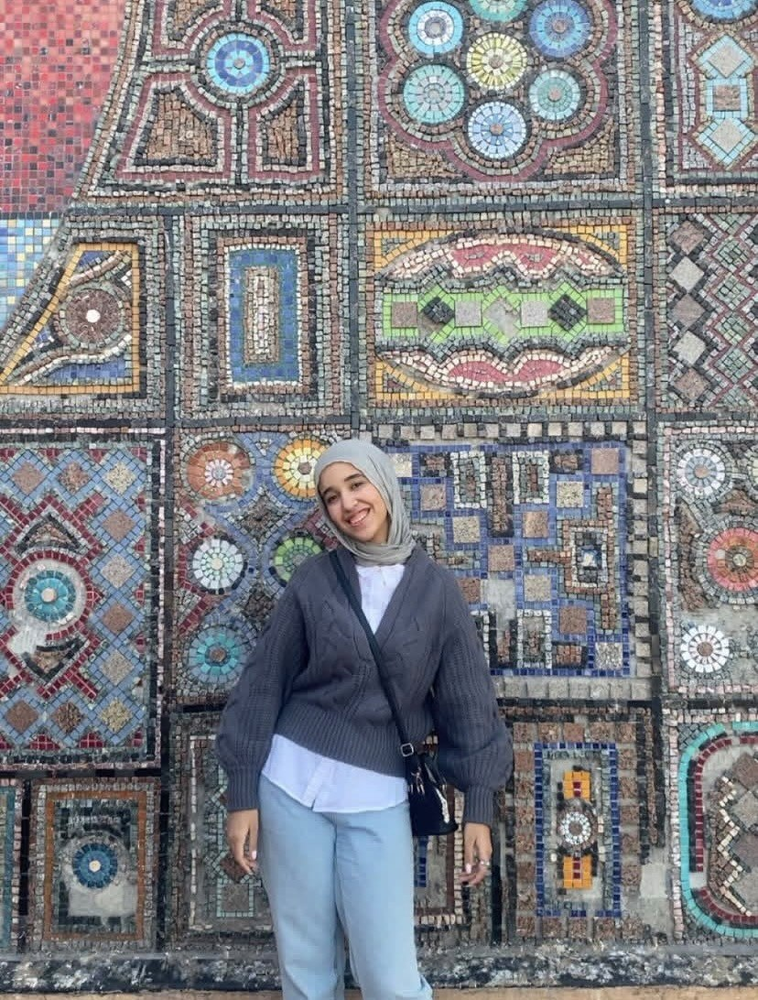

Computer science student at Cairo University, working in Python and Java, and learning to turn messy data into something worth reading.

Student, aspiring data analyst, and someone who's genuinely enjoying figuring out what she wants to build.
I'm a Computer Science student at the Faculty of Science, Cairo University, expected to graduate in 2029. Most of my coursework lives in Python and Java, but data analysis is where I keep coming back.
I picked up my DECI Level 3 Data Analysis certificate along the way, and I'm currently looking for opportunities where I can put what I know to use and keep learning from people further down the road than me.
Arabic is my native language and I work comfortably in English too.
Still early, still building, here's where things stand.
Got my first real introduction to data science and Python through the DECI program, working my way up to the Level 3 Data Analysis certificate.
Currently a CS student at the Faculty of Science, building on that early data science foundation with coursework in Python and Java.
Expected to graduate with my B.Sc. in Computer Science, hopefully with a lot more milestones to add here by then.
The technical toolkit and languages I use day to day.
A certification covering hands-on data analysis work, completed alongside my coursework at Cairo University.
Wrangling messy, real-world data into something you can actually learn from.
Worked with the tweet archive of WeRateDogs, a Twitter account known for rating people's dogs (almost always above 10 out of 10). The dataset came in several formats and was far from clean.
I gathered the data from multiple sources, assessed its quality and tidiness, then cleaned it, documenting the whole process in a Jupyter Notebook. From there I analyzed and visualized the cleaned data to pull out real patterns in the ratings.